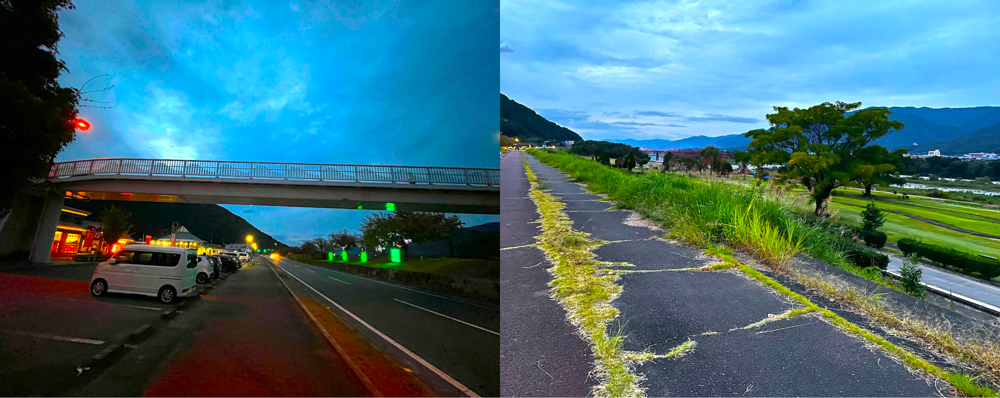
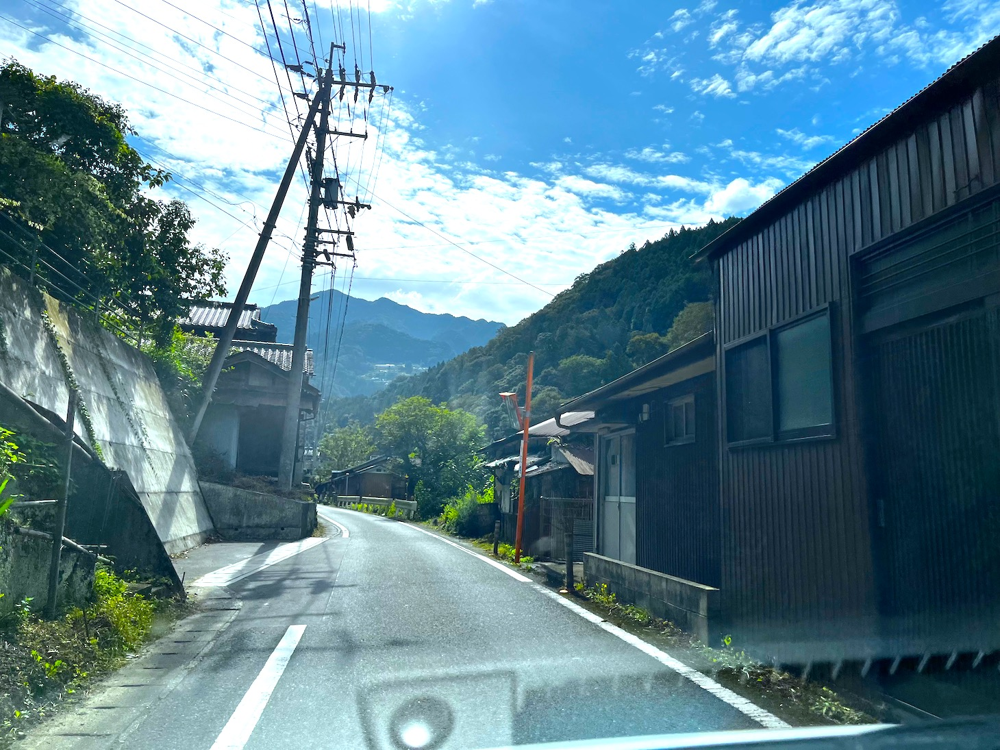
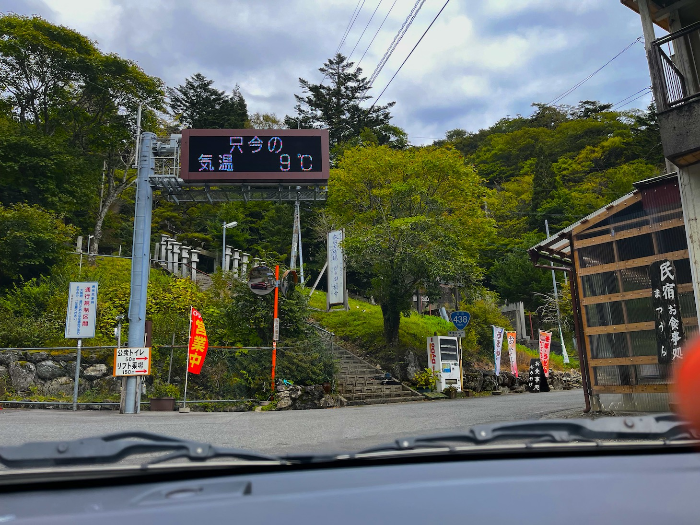
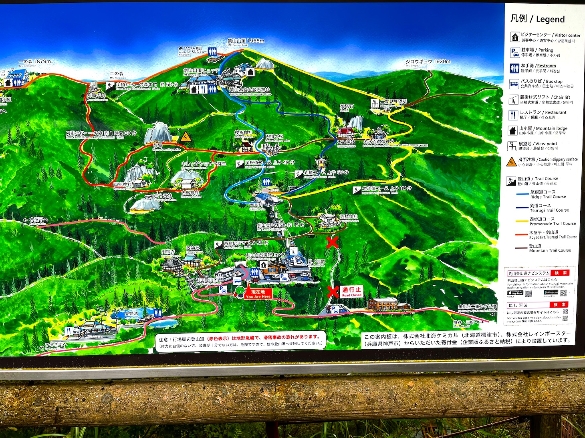
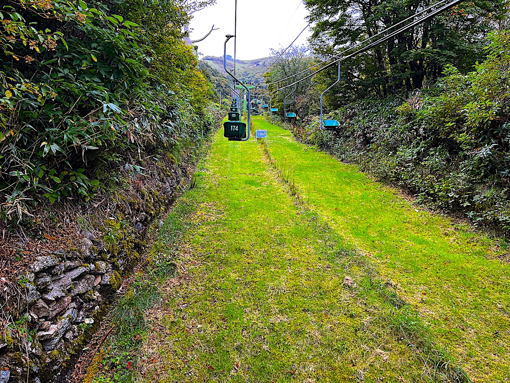
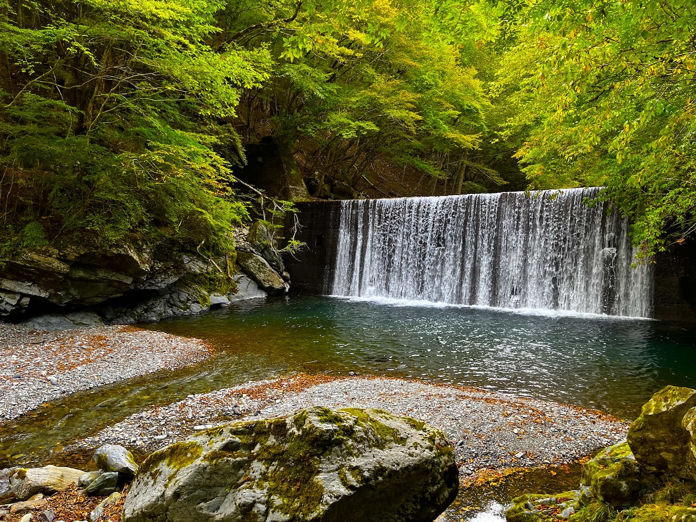
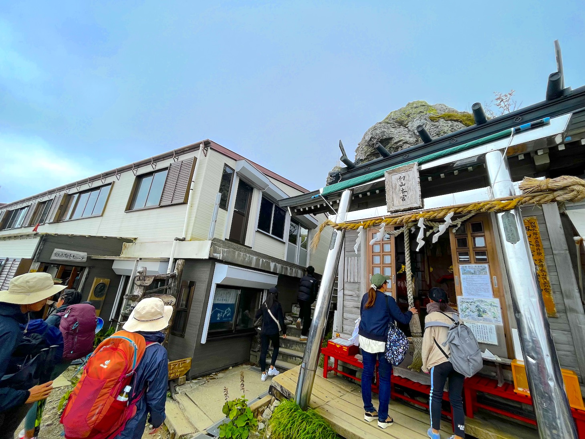
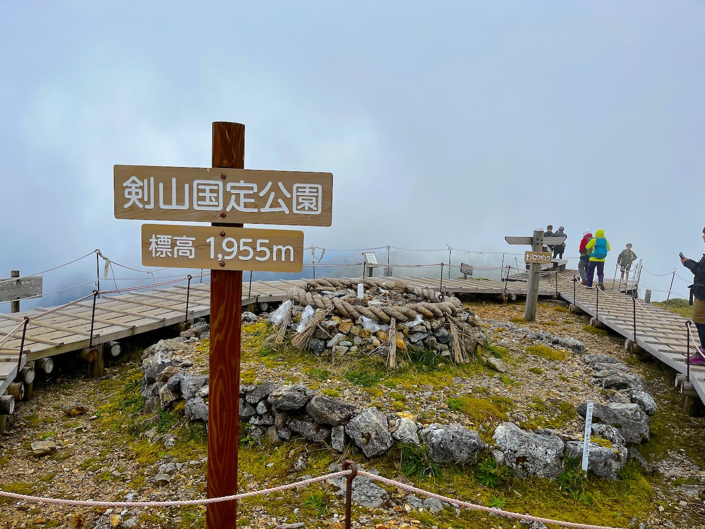
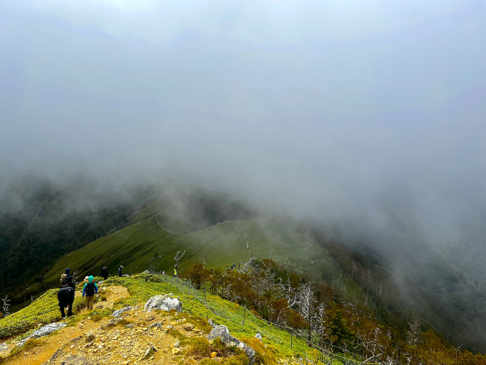
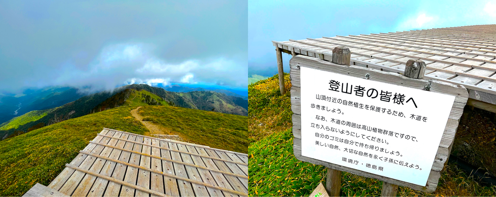

剣山へわんちゃんとGO
徳島の秘境・剣山にわんちゃんと一緒に行ってみよう!!
前編
徳島市内からは国道192号線と438号線を使って2時間半くらいかかります。
ルートは2本ありますが、こちらのコースの方が直線が多いので行きやすいです。
わんちゃんの疲労も考えて適度に休憩を挟んでいきましょう。
国道192号線は普通の道なのですが、438号線は細い山道になります。
おすすめの休憩ポイントは道の駅貞光ゆうゆう館です。
こちらの施設内にはわんちゃんは入れないのですが、歩道橋を渡ったところに土手と公園があるのでわんちゃんを散歩させることができます。

道の駅を出た後は細い山道を行くことになります。
集落の中は道がかなり細いので注意して運転しましょう。

途中で車を止めれるような空き地もあるので車酔い対策も兼ねて、2回くらい休憩を挟んであげるといいです。
現地に到着したら交通案内してくれる方が駐車場を教えてくれました。

私たちが行った時は上の駐車場が満車で、下の駐車場に停めることになりました。
車で1.5kmほど下ることになりますが、歩きの場合は山の中を登っていくのでそこまで遠くは感じません。
登山口からは、リフトで上がる方法と徒歩で登山する方法があります。
地図

リフトを使うと1時間くらい登山を短縮することができます。
わんちゃん連れでリフトを使う場合、施設さんのご厚意でバックに入れられる小型犬なら一緒に乗せてもらえます。
一人乗りのリフトなので、中大型犬や大人しく乗れないワンちゃんは徒歩で頂上を目指すことになります。

15分くらいリフトに乗ると西島駅に到着。
そこから本格的に登山になります。
登山に慣れてない方は休みながら登っていきましょう。
標高が高いので、酸素が薄く感じます。
普段運動しない私たちも休み休み登りました。

途中で何匹もワンちゃんとすれ違いました。こんな足場ですが、みんな元気に歩いていましたよ。
登り切ると、山小屋があって、その横の階段を登るとデッキがあります。

他に風を遮るものがないから、風が強くとにかく寒い。
必ず防寒装備は持っていきましょう。
デッキに登り、右に行くとポスターにもなっている有名な尾根を望むことができます。
。。。のはずでしたがこの日はあいにくの曇りで絶景は見ることはできず。
ううぅ、また再チャレンジしたい。
左にいっても尾根は見えるのでそちらは綺麗に見ることができました。

後編へ続く